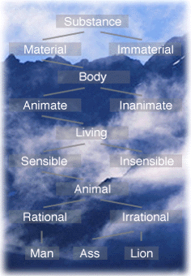

|
 |
|
The Buffalo Ontology Site
contains information on ontology, on the history of ontology, and on
contemporary ontology and its applications. It will provide links to
other ontology sites and announcements of relevant conferences and
publications.
You may begin to browse the site by selecting one of the options
from our Main Menu, which is located on the upper right hand corner
or by going here
. |